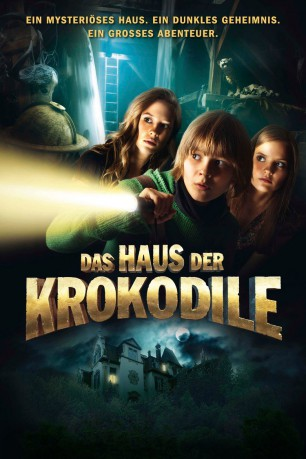

#6669 Das Haus der Krokodile
 
 IMDB-Wertung: 6.4 / 10
IMDB-Wertung: 6.4 / 10  Metascore: 0
Metascore: 0 
Familie Laroche wohnt in einer alten, unheimlichen Villa. Als die Eltern im Urlaub sind, ist der elfjährige Viktor mit seinen älteren Schwestern Cora und Louise allein zuhause. Beim Streifzug durch die alten Zimmer entdeckt der Junge zwischen verstaubten Umzugskartons und uralten afrikanischen Masken ein kleines, ausgestopftes Krokodil mit leeren Augenhöhlen. Plötzlich erstarrt Viktor mit schreckgeweiteten Augen vor einem großen Spiegel: Hinter ihm huscht eine dunkle Gestalt durch die Wohnung. Ein Einbrecher, ein Geist? Viktor beginnt panisch nach ihm zu suchen. Dabei stößt er im „verbotenen Zimmer" auf das Tagebuch von Cäcilie. Das junge Mädchen ist vor vielen Jahren auf mysteriöse Weise in dem Haus ums Leben gekommen. Fasziniert blättert Viktor durch das Buch und folgt Cäcilies rätselhaften Hinweisen durch die Villa. Viktor spürt, dass er einem großen Geheimnis auf der Spur ist...
Jahr: 2012
Dauer: 94 Minuten
FSK: 6
Land: Deutschland Studio: Constantin FilmTonspuren:
Untertitel:
Auflösung: 1080p (1920x816) Größe: 5683 MB
Genre: Abenteuer, Familie, Mystery
Regisseur: Cyrill Boss, Philipp Stennert
Drehbuch: Eckhard Vollmar
Soundtrack:
Darsteller:
- Vijessna Ferkic als Louise
 Gudrun Ritter als Frau Debisch
Gudrun Ritter als Frau Debisch Waldemar Kobus als Herr Strichninsky
Waldemar Kobus als Herr Strichninsky- Dieter Schaad als Onkel Gustav
- Katja Weitzenböck als Viktors Mutter
- Kristo Ferkic als Victor Laroche
- Joanna Ferkic als Cora
 Christoph Maria Herbst als Friedrich Debisch
Christoph Maria Herbst als Friedrich Debisch- Elena Oechsner als Cäcilie
- Uwe Friedrichsen als Herr Opitz
- Susanne Berckhemer als Junge Frau Debisch
- Peter Lerchbaumer als Älterer Polizist
- Christian Furrer als Jüngerer Polizist
- Matthias Müsse als Pfarrer Spatz
- Justus Winker als Victor Double #1
- Maximilian Kern als Victor Double #2
- Julia Hachmer als Cora Double
- Z.Z. Flopp als Friedrichs Band
- Christoph Aupperle als Friedrichs Band
- Martin Lejeune als Friedrichs Band
- Anselm Wild als Friedrichs Band
- Thomas Ohrner als Viktors Vater
Datei: X:\4-Tetralogie(M-Z)\Vorstadtkrokodile\Haus der Krokodile, Das (2012, FSK6, 1920x816).mkv seit 02.08.2017
Festplatte: HD Collection-3(N-Z)-6(A-Z)
 Es gibt insgesamt 7 Filme in der Gruppe '4-Tetralogie(M-Z)\Vorstadtkrokodile'
Es gibt insgesamt 7 Filme in der Gruppe '4-Tetralogie(M-Z)\Vorstadtkrokodile'